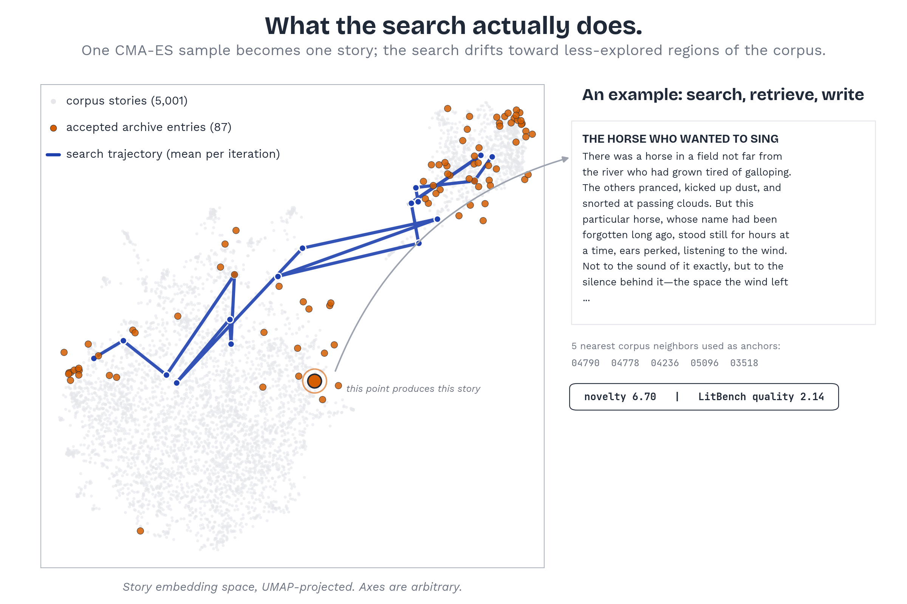
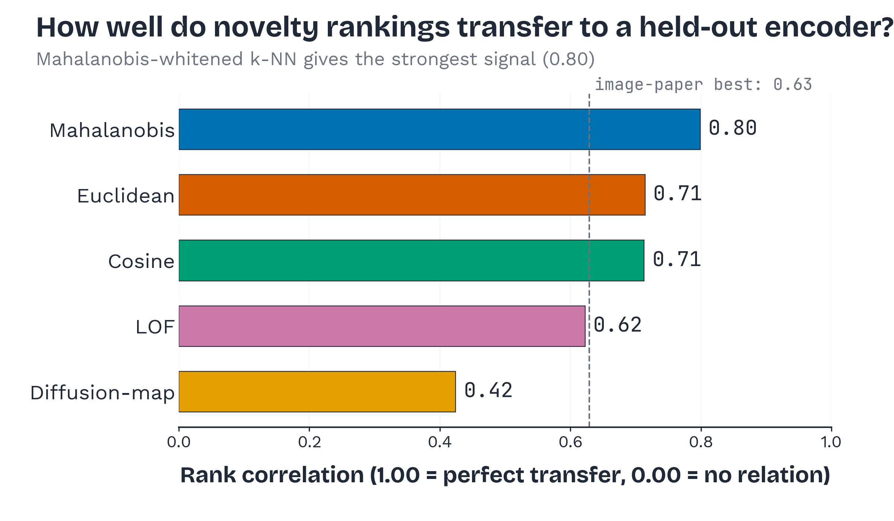
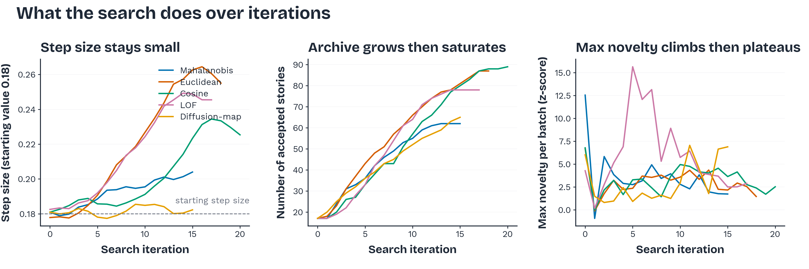
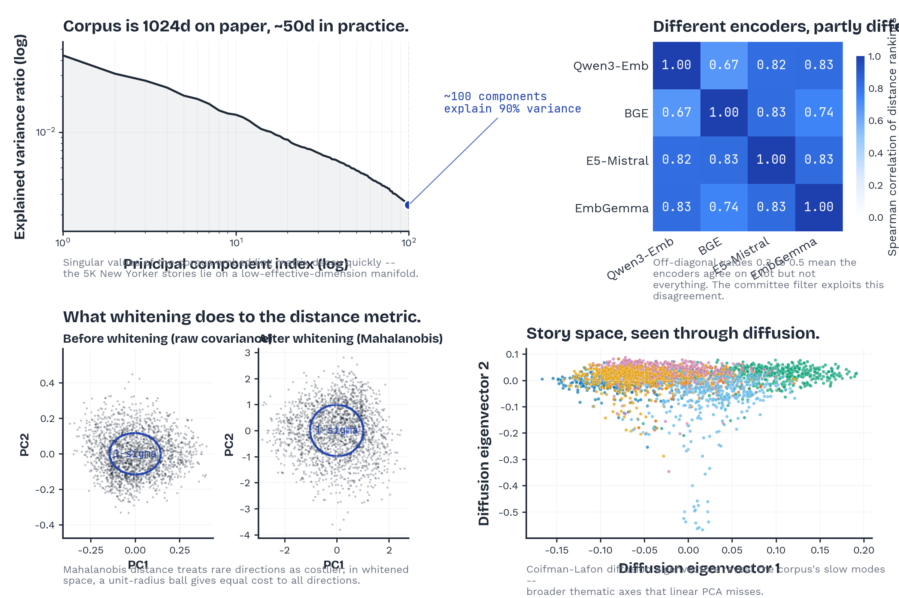
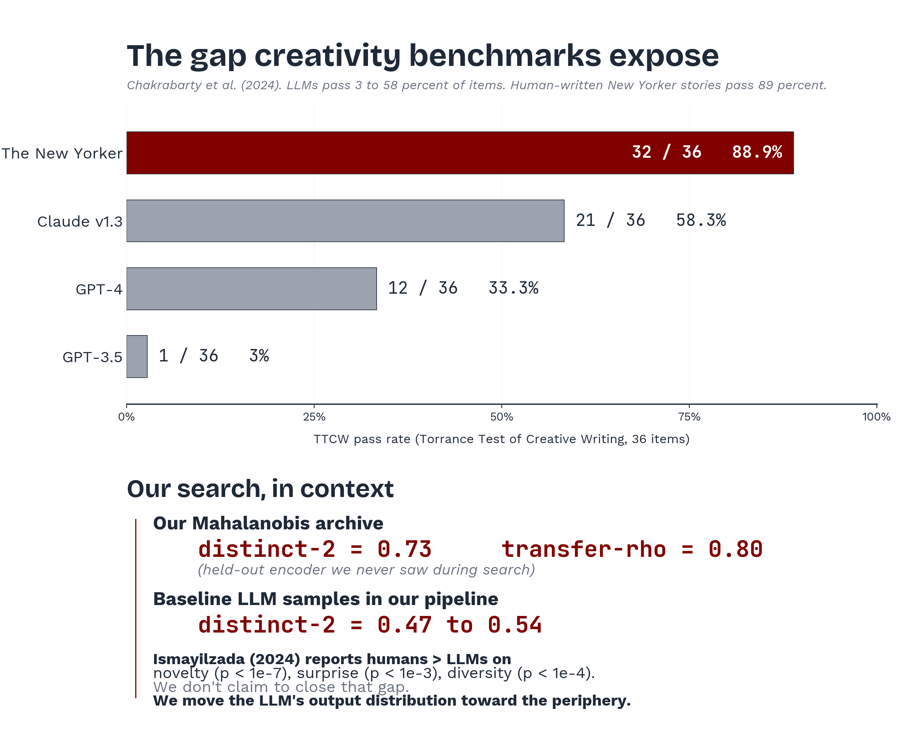
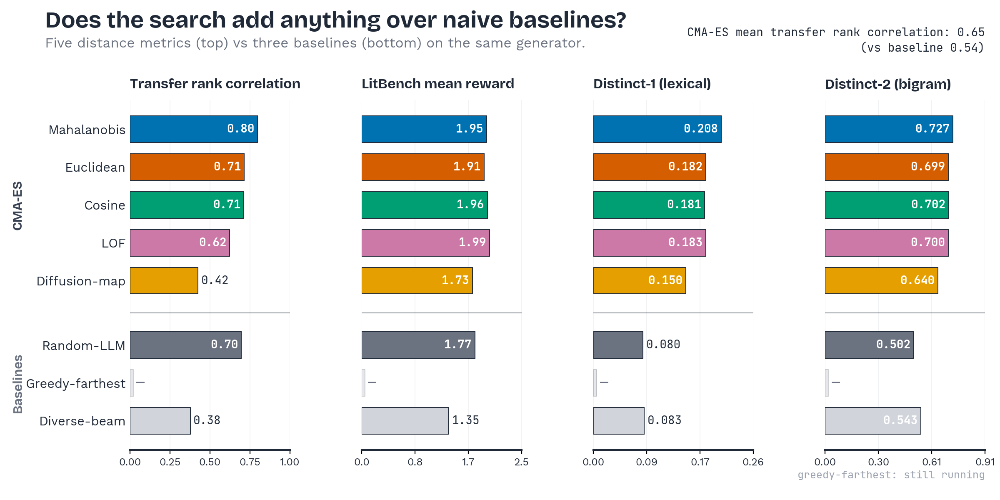

<!DOCTYPE html>
<html lang="en">
<head>
<meta charset="UTF-8">
<meta name="viewport" content="width=device-width, initial-scale=1.0">
<title>Writing Beyond Imagination · Novelty Search for Stories</title>
<link rel="stylesheet" href="https://cdn.jsdelivr.net/npm/katex@0.16.9/dist/katex.min.css">
<script defer src="https://cdn.jsdelivr.net/npm/katex@0.16.9/dist/katex.min.js"></script>
<script defer src="https://cdn.jsdelivr.net/npm/katex@0.16.9/dist/contrib/auto-render.min.js"></script>
<link rel="preconnect" href="https://fonts.googleapis.com">
<link rel="preconnect" href="https://fonts.gstatic.com" crossorigin>
<link href="https://fonts.googleapis.com/css2?family=Space+Grotesk:wght@400;500;600;700&family=Bricolage+Grotesque:opsz,wght@12..96,400;12..96,500;12..96,600;12..96,700&family=Inter:wght@300;400;500;600;700&family=JetBrains+Mono:wght@400;500;600&family=Crimson+Pro:wght@500;600;700&display=swap" rel="stylesheet">
<script crossorigin src="https://unpkg.com/react@18/umd/react.production.min.js"></script>
<script crossorigin src="https://unpkg.com/react-dom@18/umd/react-dom.production.min.js"></script>
<script crossorigin src="https://unpkg.com/@babel/standalone/babel.min.js"></script>
<style>
  /* ============================================================
     Palette — white paper, charcoal/gray ink, one signal accent.
     Data-viz colors (Okabe–Ito subset) live inside .ok-* tokens
     and must only appear inside chart elements.
     ============================================================ */
  :root {
    --ink:       #1F2937;   /* charcoal — primary text */
    --ink-2:     #6B7280;   /* secondary text / captions */
    --rule:      #E5E7EB;   /* hairline */
    --bg:        #FFFFFF;   /* paper (pure white) */
    --panel:     #F9FAFB;   /* soft panel for hero stories */
    --accent:    #800000;   /* single signal accent (UChicago Maroon) */
    /* Okabe–Ito (chart-only) */
    --ok-blue:   #0072B2;   /* mahalanobis (winner) */
    --ok-verm:   #D55E00;   /* euclidean */
    --ok-green:  #009E73;   /* cosine */
    --ok-purple: #CC79A7;   /* lof */
    --ok-orange: #E69F00;   /* diffusion */
    --gap: 8mm;
    --pad: 14mm;
    --font-scale: 1.0;
  }
  /* Bricolage Grotesque as a tasteful display alternate; fall back to Space Grotesk. */
  @import url('https://fonts.googleapis.com/css2?family=Bricolage+Grotesque:opsz,wght@12..96,400;12..96,500;12..96,600;12..96,700&display=swap');

  /* ============================================================
     36" x 24" landscape → 914mm × 610mm
     ============================================================ */
  @page { size: 914mm 610mm; margin: 0; }
  * { margin: 0; padding: 0; box-sizing: border-box; }
  html {
    font-family: 'Inter', sans-serif;
    color: var(--ink);
    -webkit-print-color-adjust: exact;
    print-color-adjust: exact;
    font-feature-settings: "kern", "liga", "ss01";
  }
  body {
    width: 914mm; height: 610mm;
    background: var(--bg);
    overflow: hidden;
    transform-origin: top left;
  }
  #root { width: 100%; height: 100%; display: grid; grid-template-rows: 60mm 1fr 18mm; }
  @media screen { html { background:#888; overflow:hidden; width:100vw; height:100vh; } body { position:absolute; box-shadow:0 4px 30px rgba(0,0,0,.25); } }
  @media print { html { background:none; } body { position:static; transform:none!important; box-shadow:none; } .toolbar,.divider,.swap-handle,.drop-zone{display:none!important;} }
  body.preview .divider, body.preview .swap-handle, body.preview .drop-zone { display:none!important; }

  /* === HEADER STRIP — hairlines + typography, not a banner === */
  .header {
    padding: 6mm var(--pad) 3mm;
    display: flex;
    flex-direction: column;
    gap: 0;
    border-bottom: .25mm solid var(--rule);
    background: var(--bg);
    position: relative;
  }
  .header-top {
    display: grid;
    grid-template-columns: auto 1fr auto;
    gap: 14mm;
    align-items: center;
    margin-top: 1mm;
  }
  .header-left {
    display: flex;
    align-items: center;
    justify-content: flex-start;
    flex-shrink: 0;
  }
  .header-left img {
    height: 30mm;
    width: auto;
    display: block;
  }
  .header-center {
    display: flex;
    flex-direction: column;
    align-items: center;
    justify-content: center;
    text-align: center;
    min-width: 0;
  }
  .header .eyebrow {
    font-family: 'JetBrains Mono', monospace;
    font-size: calc(9pt * var(--font-scale));
    color: var(--ink-2);
    letter-spacing: .18em;
    text-transform: uppercase;
    font-weight: 500;
    margin-bottom: 1.5mm;
  }
  .header h1 {
    font-family: 'Space Grotesk', sans-serif;
    font-weight: 700;
    font-size: calc(54pt * var(--font-scale));
    line-height: 0.95;
    letter-spacing: -.028em;
    color: var(--ink);
    margin: 0;
    text-align: center;
  }
  .header h1 .accent {
    font-style: italic;
    font-weight: 500;
    color: var(--accent);
  }
  .header .subtitle {
    font-family: 'Inter', sans-serif;
    font-weight: 400;
    font-size: calc(16pt * var(--font-scale));
    line-height: 1.2;
    color: var(--ink-2);
    text-align: center;
    margin-top: 2mm;
  }

  /* === BRIEF — right side of header, replaces tldr card === */
  .brief {
    width: 200mm;
    flex-shrink: 0;
    display: flex;
    flex-direction: column;
    gap: 1.5mm;
    border-left: .35mm solid var(--accent);
    padding-left: 5mm;
  }
  .brief .brief-eyebrow {
    font-family: 'JetBrains Mono', monospace;
    font-size: calc(7.5pt * var(--font-scale));
    color: var(--ink-2);
    letter-spacing: .18em;
    text-transform: uppercase;
    font-weight: 500;
  }
  .brief p {
    font-family: 'Inter', sans-serif;
    font-size: calc(9.5pt * var(--font-scale));
    line-height: 1.35;
    color: var(--ink);
    font-weight: 400;
    margin: 0;
  }
  .brief p sup { font-size: 0.75em; }
  .brief .big {
    font-family: 'Space Grotesk', sans-serif;
    font-weight: 700;
    color: var(--accent);
    font-size: calc(16pt * var(--font-scale));
    letter-spacing: -.01em;
    line-height: 1;
  }
  .brief .brief-byline {
    font-family: 'JetBrains Mono', monospace;
    font-size: calc(7pt * var(--font-scale));
    color: var(--ink-2);
    font-weight: 500;
    letter-spacing: .12em;
    text-transform: uppercase;
    margin-top: 1mm;
  }
  .brief .brief-byline b { color: var(--ink); font-weight: 600; }

  /* === POSTER BODY — magazine spread, 3 asymmetric columns === */
  .poster {
    display: flex;
    gap: var(--gap);
    padding: 6mm var(--pad) var(--gap);
    min-height: 0;
    overflow: hidden;
  }
  .col { display: flex; flex-direction: column; gap: 0; min-height: 0; min-width: 0; overflow: hidden; padding: 0 4mm; }
  .col:first-child { padding-left: 0; }
  .col:last-child { padding-right: 0; }

  /* === CARDS — no boxes, no shadows. Text flows. === */
  .card {
    background: transparent;
    border: none;
    box-shadow: none;
    padding: 0;
    display: flex;
    flex-direction: column;
    overflow: visible;
    min-height: 0;
    flex: 0 0 auto;
    position: relative;
    margin-bottom: 7mm;
  }
  .card:last-child { margin-bottom: 0; }
  .card.grow { flex: 1 1 0; }

  /* Hairline rule above each card (except the first in its column). */
  .card.has-rule::before {
    content: '';
    display: block;
    border-top: .14mm solid var(--rule);
    margin: 0 0 7mm 0;
  }

  /* Section number — typographic anchor */
  .section-num {
    display: block;
    font-family: 'JetBrains Mono', monospace;
    font-weight: 500;
    font-size: calc(28pt * var(--font-scale));
    line-height: 0.85;
    color: var(--accent);
    opacity: 0.92;
    letter-spacing: -.04em;
    user-select: none;
    pointer-events: none;
    margin-bottom: 1.5mm;
  }

  /* eyebrow + section header */
  .card .eyebrow {
    font-family: 'JetBrains Mono', monospace;
    font-size: calc(8pt * var(--font-scale));
    color: var(--ink-2);
    letter-spacing: .18em;
    text-transform: uppercase;
    margin-bottom: 2mm;
    font-weight: 500;
  }
  .card h2 {
    font-family: 'Space Grotesk', sans-serif;
    font-weight: 700;
    font-size: calc(24pt * var(--font-scale));
    line-height: 1.02;
    color: var(--ink);
    margin-bottom: 2mm;
    letter-spacing: -.022em;
    flex-shrink: 0;
  }
  .card .accent-rule {
    width: 14mm;
    height: .5mm;
    background: var(--accent);
    margin-bottom: 3.5mm;
    flex-shrink: 0;
  }
  .card p, .card li {
    font-family: 'Inter', sans-serif;
    font-size: calc(9.5pt * var(--font-scale));
    line-height: 1.45;
    color: var(--ink);
  }
  .card ul, .card ol { padding-left: 5mm; flex-shrink: 0; }
  .card li { margin-bottom: 2mm; color: var(--ink); }
  .card li::marker { color: var(--ink-2); font-weight: 600; }
  .card strong, .card b { color: var(--ink); font-weight: 600; }

  /* TL;DR — clean prose, no panel box. */
  .hl {
    background: transparent;
    border: none;
    border-left: .5mm solid var(--accent);
    padding: 1mm 0 1mm 5mm;
    margin-bottom: 5mm;
    flex-shrink: 0;
  }
  .hl p {
    font-family: 'Inter', sans-serif;
    font-size: calc(12pt * var(--font-scale));
    line-height: 1.44;
    color: var(--ink);
    font-weight: 400;
  }
  .hl .big {
    font-family: 'Space Grotesk', sans-serif;
    font-weight: 700;
    color: var(--accent);
    font-size: 1.35em;
    letter-spacing: -.01em;
  }

  /* Full-bleed pipeline figure — anchors col A */
  .card.fullbleed { padding: 0; margin-left: -4mm; margin-right: -4mm; }
  .card.fullbleed .fig-wrap { padding: 0; border: none; }
  .card.fullbleed .cap { padding: 0 4mm; margin-top: 2.5mm; }
  .card.fullbleed h2,
  .card.fullbleed .eyebrow,
  .card.fullbleed .accent-rule { padding-left: 4mm; }
  .card.fullbleed .section-num { left: 0; }

  /* Figures — no borders, just the image. */
  .fig { display: flex; flex-direction: column; min-height: 0; }
  .fig.grow { flex: 1 1 0; }
  .fig-wrap {
    flex: 1; display: flex; align-items: center; justify-content: center;
    min-height: 0; overflow: hidden;
    background: transparent;
    border: none;
  }
  .fig-wrap img { width: 100%; height: 100%; object-fit: contain; display: block; }
  .fig-wrap.svg-wrap { background: transparent; border: none; }
  .fig .cap {
    font-family: 'Inter', sans-serif;
    font-style: italic;
    font-size: calc(8.5pt * var(--font-scale));
    color: var(--ink-2);
    margin-top: 2.5mm;
    line-height: 1.45;
    flex-shrink: 0;
  }
  .fig .cap b { color: var(--ink); font-weight: 600; font-style: normal; }

  /* Tables */
  table {
    width: 100%;
    border-collapse: collapse;
    font-family: 'Inter', sans-serif;
    font-size: calc(9.5pt * var(--font-scale));
    margin: 1mm 0;
  }
  thead th {
    font-family: 'Space Grotesk', sans-serif;
    color: var(--ink);
    padding: 2mm 2.5mm;
    text-align: left;
    font-weight: 700;
    font-size: calc(9pt * var(--font-scale));
    border-bottom: .4mm solid var(--ink);
    letter-spacing: .03em;
  }
  thead th.num, tbody td.num { text-align: right; font-variant-numeric: tabular-nums; font-family: 'JetBrains Mono', monospace; font-size: calc(9pt * var(--font-scale)); }
  tbody td {
    padding: 1.6mm 2.5mm;
    border-bottom: .12mm solid var(--rule);
    color: var(--ink);
  }
  tbody tr:last-child td { border-bottom: none; }
  tbody td.metric { color: var(--ink); font-weight: 500; font-family: 'JetBrains Mono', monospace; font-size: calc(9pt * var(--font-scale)); }
  tbody td.best b { color: var(--accent); font-weight: 700; }
  tbody tr.winner td { background: transparent; font-weight: 600; }
  tbody tr.winner td.metric { color: var(--accent); }
  tbody td .swatch {
    display: inline-block;
    width: 2.5mm; height: 2.5mm;
    border-radius: 0;
    margin-right: 1.5mm;
    vertical-align: middle;
  }

  /* ============================================================
     Hero qualitative card — magazine spread, drop caps, pull-quotes
     ============================================================ */
  .card.hero { display: flex; flex-direction: column; min-height: 0; }
  .card.hero .hero-lede {
    font-family: 'Inter', sans-serif;
    font-style: italic;
    font-weight: 300;
    font-size: calc(11pt * var(--font-scale));
    line-height: 1.4;
    color: var(--ink-2);
    margin-bottom: 4mm;
    flex-shrink: 0;
    max-width: 230mm;
  }
  .card.hero .hero-lede .mono { font-family: 'JetBrains Mono', monospace; font-size: .85em; color: var(--ink); font-style: normal; }

  .story-grid {
    display: flex;
    flex-direction: column;
    gap: 5mm;
    flex: 0 0 auto;
    min-height: 0;
  }
  .story {
    background: transparent;
    border: none;
    padding: 4mm 0 0 0;
    border-top: .14mm solid var(--rule);
    display: flex;
    flex-direction: column;
    flex: 0 0 auto;
    min-height: 0;
  }
  .story:first-child { border-top: none; padding-top: 0; }
  .story .story-head {
    display: flex;
    flex-direction: column;
    align-items: flex-start;
    margin-bottom: 3mm;
    gap: 1mm;
    flex-shrink: 0;
  }
  .story .story-num {
    font-family: 'JetBrains Mono', monospace;
    font-size: calc(7.5pt * var(--font-scale));
    color: var(--ink-2);
    letter-spacing: .18em;
    text-transform: uppercase;
    font-weight: 500;
  }
  .story .story-title {
    font-family: 'Bricolage Grotesque', 'Space Grotesk', sans-serif;
    font-style: italic;
    font-weight: 500;
    font-size: calc(19pt * var(--font-scale));
    line-height: 1.05;
    color: var(--ink);
    letter-spacing: -.01em;
  }
  .story .prose {
    font-family: 'Inter', sans-serif;
    font-size: calc(12pt * var(--font-scale));
    line-height: 1.45;
    color: var(--ink);
    font-weight: 400;
    margin-bottom: 3.5mm;
  }
  /* clearfix for drop-cap float */
  .story .prose::after { content: ''; display: block; clear: both; }
  .story .prose .drop {
    font-family: 'Bricolage Grotesque', 'Space Grotesk', serif;
    font-weight: 700;
    font-size: calc(58pt * var(--font-scale));
    line-height: .82;
    float: left;
    margin: 1mm 3mm -1mm 0;
    color: var(--accent);
    letter-spacing: -.03em;
  }
  /* Pull-quote box for the metric chip row */
  .story .story-chip-row {
    display: flex;
    flex-direction: column;
    gap: 1mm;
    align-items: flex-start;
    padding: 1mm 0 1mm 4mm;
    border-left: .35mm solid var(--accent);
    flex-wrap: wrap;
  }
  .story .chip {
    font-family: 'Inter', sans-serif;
    font-style: italic;
    font-weight: 300;
    font-size: calc(9pt * var(--font-scale));
    letter-spacing: .005em;
    background: transparent;
    color: var(--ink-2);
    border: none;
    padding: 0;
  }
  .story .chip.muted {
    font-family: 'JetBrains Mono', monospace;
    font-style: normal;
    font-size: calc(7.5pt * var(--font-scale));
    color: var(--ink-2);
    letter-spacing: .12em;
    text-transform: uppercase;
  }

  /* ============================================================
     Vignette list (hard lessons)
     ============================================================ */
  .vignette {
    padding: 2.5mm 0;
    border-bottom: .14mm solid var(--rule);
  }
  .vignette:last-child { border-bottom: none; padding-bottom: 0; }
  .vignette:first-child { padding-top: 0; }
  .vignette .vlead {
    font-family: 'Space Grotesk', sans-serif;
    font-weight: 600;
    font-size: calc(10.5pt * var(--font-scale));
    color: var(--ink);
    margin-bottom: 1mm;
    letter-spacing: -.01em;
  }
  .vignette .vbody {
    font-family: 'Inter', sans-serif;
    font-size: calc(9pt * var(--font-scale));
    line-height: 1.42;
    color: var(--ink);
  }
  .vignette .vbody .mono {
    font-family: 'JetBrains Mono', monospace;
    font-size: calc(9pt * var(--font-scale));
    background: transparent;
    color: var(--accent);
    padding: 0;
  }
  .vignette .vbody b { color: var(--ink); font-weight: 600; }

  /* ============================================================
     Pipeline SVG card — gets serious vertical real estate
     ============================================================ */
  .pipeline-card { display: flex; flex-direction: column; }
  .pipeline-card .fig-wrap.svg-wrap { align-items: stretch; padding: 4mm; }
  .pipeline-svg { width: 100%; height: 100%; }
  .pipeline-svg text { font-family: 'Inter', sans-serif; }
  .pipeline-svg .pl-label { font-family: 'Space Grotesk', sans-serif; font-size: 11pt; letter-spacing: .02em; font-weight: 700; fill: var(--ink); }
  .pipeline-svg .pl-sub { font-family: 'Inter', sans-serif; font-size: 9pt; fill: var(--ink-2); }
  .pipeline-svg .pl-tag { font-family: 'JetBrains Mono', monospace; font-size: 8pt; letter-spacing: .14em; text-transform: uppercase; fill: var(--ink-2); }
  .pipeline-svg .pl-stage { font-family: 'Inter', sans-serif; font-style: italic; font-size: 9pt; fill: var(--ink-2); }

  /* Math */
  .katex { font-size: calc(10pt * var(--font-scale))!important; }

  /* === LaTeX-algorithm-style block === */
  .algo {
    margin: 0 4mm 4mm 4mm;
    padding: 0;
    background: transparent;
  }
  .algo .algo-rule-top {
    border-top: .35mm solid var(--ink);
    margin: 0;
  }
  .algo .algo-rule-bot {
    border-top: .35mm solid var(--ink);
    margin: 0;
  }
  .algo .algo-caption {
    font-family: 'Space Grotesk', sans-serif;
    font-weight: 600;
    font-size: calc(9.5pt * var(--font-scale));
    color: var(--ink);
    padding: 1.5mm 0 1mm 0;
    border-bottom: .14mm solid var(--ink);
    letter-spacing: .01em;
  }
  .algo .algo-caption b { color: var(--accent); font-weight: 700; margin-right: 2mm; }
  .algo pre.algo-body {
    font-family: 'JetBrains Mono', monospace;
    font-size: calc(7.8pt * var(--font-scale));
    line-height: 1.4;
    color: var(--ink);
    padding: 2mm 0 2mm 0;
    margin: 0;
    background: transparent;
    border: none;
    white-space: pre;
    overflow: hidden;
  }
  .algo pre.algo-body .ln {
    display: inline-block;
    width: 7mm;
    color: var(--ink-2);
    text-align: right;
    padding-right: 2mm;
  }
  .algo pre.algo-body .kw { color: var(--accent); font-weight: 600; }
  .algo pre.algo-body .io {
    font-family: 'JetBrains Mono', monospace;
    font-weight: 600;
    color: var(--ink);
  }

  /* === FOOTER STRIP (16mm tall) — AI disclosure, schema form === */
  .footer {
    padding: 0 var(--pad);
    border-top: .25mm solid var(--rule);
    background: var(--bg);
    display: flex;
    align-items: center;
    gap: 4mm;
  }
  .ai-attrib {
    font-family: "JetBrains Mono", ui-monospace, SFMono-Regular, Menlo, monospace;
    font-size: calc(7.5pt * var(--font-scale));
    line-height: 1.4;
    color: #6B7280;
    max-width: 100%;
  }
  .ai-attrib .ai-attrib-lede { font-weight: 600; color: var(--ink); }
  .ai-attrib a { color: inherit; text-decoration: underline dotted; }
  .ai-attrib .ai-item { white-space: nowrap; }
  .ai-attrib .tags {
    margin: 0 0.35em;
    padding: 0 0.35em;
    border: 1px solid currentColor;
    border-radius: 1mm;
    font-variant-numeric: tabular-nums;
    letter-spacing: 0.02em;
    color: var(--accent);
  }
  .ai-attrib .role-label { font-style: italic; color: #9CA3AF; }

  /* === EDIT UI — HIDDEN in all modes for final render/print === */
  .toolbar, .swap-handle, .divider, .drop-zone, .col-divider, .row-divider { display: none !important; }
  ._toolbar_old { position: fixed; top: 8px; right: 8px; z-index: 1000; display: flex; gap: 6px; align-items: center; }
  .toolbar button {
    font-family: 'Inter', sans-serif;
    font-size: 11px; font-weight: 600;
    padding: 5px 12px; border-radius: 4px; border: 1px solid #ccc;
    cursor: pointer; background: #f8f8f8; color: #444;
  }
  .toolbar button:hover { background: #eaeaea; }

  /* Swap handles + dividers + drop zones (edit UI) */
  .card .swap-handle {
    position: absolute; top: 2mm; right: 2mm;
    width: 6mm; height: 6mm;
    background: var(--accent); color: #fff;
    font-size: 9pt; text-align: center; line-height: 6mm;
    cursor: pointer; z-index: 10; user-select: none;
    opacity: .18;
    transition: opacity .15s, background .15s, transform .15s;
    border-radius: 1mm;
  }
  .card .swap-handle:hover { opacity: .8; transform: scale(1.1); }
  .card.swap-selected { outline: .7mm solid var(--accent); outline-offset: -.3mm; }
  .card.swap-selected .swap-handle { opacity: 1; transform: scale(1.15); }
  .divider { position: relative; z-index: 50; flex-shrink: 0; }
  .divider::after { content: ''; position: absolute; background: rgba(128,0,0,.10); border-radius: 1mm; transition: background .15s; }
  .divider:hover::after, .divider.active::after { background: rgba(128,0,0,.4); }
  .col-resize { width: 6mm; cursor: col-resize; margin: 0 -3mm; }
  .col-resize::after { top: 0; bottom: 0; left: 1.5mm; width: 3mm; }
  .row-resize { height: 6mm; cursor: row-resize; margin: -3mm 0; }
  .row-resize::after { left: 0; right: 0; top: 1.5mm; height: 3mm; }
  .drop-zone { height: 0; position: relative; z-index: 60; transition: height .15s; }
  .drop-zone.visible { height: 4mm; }
  .drop-zone-inner {
    position: absolute; left: 2mm; right: 2mm; top: 0; bottom: 0;
    border-radius: 1mm;
    background: rgba(128,0,0,.12);
    border: .35mm dashed var(--accent);
    transition: background .15s; cursor: pointer;
  }
  .drop-zone-inner:hover { background: rgba(128,0,0,.3); }
</style>
</head>
<body>
<div id="root"></div>

<script type="text/babel">
const { useState, useRef, useEffect, useCallback } = React;
const MM = 3.7795275591;
/* 36" × 24" landscape */
const POSTER_W_MM = 914;
const POSTER_H_MM = 610;

/* ============================================================
   Cards
   ============================================================ */
const CARD_REGISTRY = {
  intro: {
    title: 'The question',
    sectionNum: '01',
    eyebrow: 'Introduction',
    grow: false,
    body: (
      <>
        <p style={{fontSize:'calc(13pt * var(--font-scale))', lineHeight:1.45, marginBottom:'3mm'}}>
          <b>Foundation models compress how stories tend to be told.</b> Sample naively, you get the
          average voice, the average twist.
        </p>
        <p style={{fontSize:'calc(11pt * var(--font-scale))', lineHeight:1.4, color:'var(--ink-2)', marginBottom:'3mm'}}>
          But the rare directions in the model's embedding space hold stories it could write but rarely does.
        </p>
        <p style={{fontSize:'calc(13pt * var(--font-scale))', lineHeight:1.4}}>
          <b>Search the periphery.</b> Pull the unsaid.
        </p>
      </>
    ),
  },

  background: {
    title: 'What’s been tried',
    sectionNum: '02',
    eyebrow: 'Background',
    grow: false,
    body: (
      <>
        <p style={{fontSize:'calc(10.5pt * var(--font-scale))', lineHeight:1.4, marginBottom:'2.5mm'}}>
          <b>Creativity scoring is contested.</b> Chakrabarty 2024: GPT-4 passes <b>12 / 36</b> TTCW
          items; human writers pass <b>32 / 36</b>. LLM judges agree with experts at Cohen κ ≈ 0.
        </p>
        <p style={{fontSize:'calc(10.5pt * var(--font-scale))', lineHeight:1.4, marginBottom:'2.5mm'}}>
          <b>Ismayilzada 2024</b> (60 LLMs vs 59 humans): humans beat LLMs on <b>novelty</b>
          (p&lt;10<sup>−7</sup>), <b>surprise</b> (p&lt;10<sup>−3</sup>), <b>diversity</b>
          (p&lt;10<sup>−4</sup>).
        </p>
        <p style={{fontSize:'calc(10.5pt * var(--font-scale))', lineHeight:1.4, marginBottom:'2.5mm'}}>
          <b>LitBench (Fein 2025).</b> 43,827 WritingPrompts preference pairs. Trained Bradley-Terry
          reaches <b>78%</b> human agreement. We score with their model.
        </p>
        <p style={{fontSize:'calc(10.5pt * var(--font-scale))', lineHeight:1.4}}>
          <b>Quality-diversity</b> mostly lives in robotics and images (Lehman &amp; Stanley 2011;
          Mouret &amp; Clune 2015). Kumar 2024 ported it to FM embeddings for artificial life. We
          port it to text.
        </p>
      </>
    ),
  },

  method: {
    title: 'The algorithm',
    sectionNum: '04',
    eyebrow: 'Method',
    grow: false,
    body: (
      <>
        <p style={{marginBottom:'2.5mm', fontSize:'calc(9.5pt * var(--font-scale))', lineHeight:1.4}}>
          <b>sep-CMA-ES</b> (Ros &amp; Hansen 2008) on a 768d Qwen3-Embedding space. A diagonal
          covariance scales linearly with dimension.
        </p>
        <div className="algo">
          <div className="algo-rule-top" />
          <div className="algo-caption"><b>Algorithm 1</b> Novelty search in FM embedding space.</div>
          <pre className="algo-body" style={{fontSize:'calc(9pt * var(--font-scale))', lineHeight:1.25}}>{`     Input:  corpus C in R^768, lambda=16, T=50, committee {phi_o}
     Output: archive A of accepted (story, embedding) pairs

`}<span className="ln"> 1:</span>{` mean <- p90 point in C, step <- 0.18
`}<span className="ln"> 2:</span>{` `}<span className="kw">for</span>{` t = 1 `}<span className="kw">to</span>{` T `}<span className="kw">do</span>{`
`}<span className="ln"> 3:</span>{`    `}<span className="kw">for</span>{` j = 1 `}<span className="kw">to</span>{` lambda `}<span className="kw">do</span>{`
`}<span className="ln"> 4:</span>{`       v_j ~ N(mean, step^2 * diag(Sigma))
`}<span className="ln"> 5:</span>{`       retrieve k=5 nearest corpus stories N_j around v_j
`}<span className="ln"> 6:</span>{`       x_j <- Qwen3-32B(N_j as in-context)   // ~500 words
`}<span className="ln"> 7:</span>{`       z_j^(o) <- phi_o(x_j) for o in {BGE, E5-Mistral}
`}<span className="ln"> 8:</span>{`       nu_j <- mean_o MAD-normalised kNN-dist of z_j^(o)
`}<span className="ln"> 9:</span>{`    `}<span className="kw">end for</span>{`
`}<span className="ln">10:</span>{`    admit candidates with nu_j >= percentile_50(A) into A
`}<span className="ln">11:</span>{`    update mean, step, Sigma via rank-mu sep-CMA-ES
`}<span className="ln">12:</span>{`    `}<span className="kw">if</span>{` accept-rate < 0.25 over last 15 iters `}<span className="kw">then break</span>{`
`}<span className="ln">13:</span>{` `}<span className="kw">end for</span></pre>
          <div className="algo-rule-bot" />
        </div>
      </>
    ),
  },

  pipeline: {
    title: 'What the search does',
    sectionNum: '03',
    eyebrow: 'Pipeline visualisation',
    grow: false,
    body: (
      <div className="fig" style={{margin:0}}>
        <div className="fig-wrap" style={{height:'150mm', maxHeight:'150mm', overflow:'hidden'}}>
          
        </div>
        <div className="cap" style={{marginTop:'2mm'}}>
          Light gray dots are the 5,001 New Yorker stories. Orange dots are the 87 openings the
          Euclidean search accepted. The maroon line follows the CMA-ES mean across iterations.
          On the right is the top-novelty story this search produced and the 5 corpus stories
          it retrieved as in-context examples.
        </div>
      </div>
    ),
  },

  qualitative: {
    title: 'What it found',
    sectionNum: '05',
    eyebrow: 'Qualitative results',
    grow: false,
    cardClass: 'hero',
    body: (
      <>
        <div className="hero-lede">
          Three openings the search picked, one from each metric. Different
          registers, different topics, all from the same generator.
        </div>

        <div className="story-grid">
          <div className="story">
            <div className="story-head">
              <span className="story-num">№ 01 · Civic satire (euclidean)</span>
              <span className="story-title">Mandatory Laughter Policy</span>
            </div>
            <p className="prose">
              <span className="drop">O</span>n the morning of April 23rd, Mayor Eleanor Voss read the headline twice before the meaning fully settled in: "City Hall Adopts Mandatory Laughter Policy." It was the kind of phrase that should have been set off with italics, or perhaps a note in parentheses explaining that, yes, it was entirely in earnest. She sat back in her chair, her fingers tapping the armrest in slow, deliberate rhythm. The headline had been accompanied by a photo of the council room&hellip;
            </p>
            <div className="story-chip-row">
              <span className="chip">euclidean&nbsp;·&nbsp;novelty&nbsp;3.70&nbsp;·&nbsp;LitBench&nbsp;2.80</span>
              <span className="chip muted">iter 02 · j 11 · seed 42 · archive idx 43</span>
            </div>
          </div>

          <div className="story">
            <div className="story-head">
              <span className="story-num">№ 02 · Deadpan dystopia (mahalanobis)</span>
              <span className="story-title">The Devereaux Family, 1985</span>
            </div>
            <p className="prose">
              <span className="drop">I</span>N THE MATTER of the Annual Survey of Humanoid Utility Vehicles, the Board of Civic Oversight has issued preliminary ratings on the 1985 model year of the Devereaux Family. The Devereaux line, originally developed as part of the postwar initiative to replace aging domestic staff, continues to be marketed primarily for household management, though recent modifications suggest a shift toward companionship and ceremonial functions. Below are selected findings from the evaluation. Mr. Devereaux Senior (Full-Size Adult): Rated "Moderately Acceptable." Tested&hellip;
            </p>
            <div className="story-chip-row">
              <span className="chip">mahalanobis&nbsp;·&nbsp;novelty&nbsp;5.83&nbsp;·&nbsp;LitBench&nbsp;2.50</span>
              <span className="chip muted">iter 01 · j 03 · seed 42 · archive idx 19</span>
            </div>
          </div>

          <div className="story">
            <div className="story-head">
              <span className="story-num">№ 03 · Essay-as-fiction (lof)</span>
              <span className="story-title">Mrs. Lathrop</span>
            </div>
            <p className="prose">
              <span className="drop">T</span>HE THING about punctuation, I've always felt, is that it's the only kind of violence people accept without blinking. A period drops the curtain on a sentence like a guillotine. A comma drags the reader into suspense with the grace of a manacle. I've spent my life watching the quiet havoc commas and semicolons wreak, and I still don't entirely trust either. Take Mrs. Lathrop, for example. Mrs. Lathrop, never to be written with a lowercase "l," was the chair of the&hellip;
            </p>
            <div className="story-chip-row">
              <span className="chip">lof&nbsp;·&nbsp;novelty&nbsp;6.91&nbsp;·&nbsp;LitBench&nbsp;2.34</span>
              <span className="chip muted">iter 03 · j 09 · seed 42 · archive idx 25</span>
            </div>
          </div>
        </div>
      </>
    ),
  },

  transfer: {
    title: 'Does it transfer?',
    sectionNum: '08',
    eyebrow: 'Held-out eval',
    grow: true,
    body: (
      <>
        <div style={{
          fontFamily: "'Space Grotesk', sans-serif",
          fontWeight: 700,
          color: 'var(--accent)',
          fontSize: 'calc(22pt * var(--font-scale))',
          letterSpacing: '-.01em',
          lineHeight: 1,
          marginBottom: '2mm'
        }}>rank-corr 0.80</div>
        <p style={{marginBottom:'3mm', fontSize:'calc(10.5pt * var(--font-scale))'}}>
          Five distance metrics, one held-out encoder (EmbeddingGemma) we never
          touched during search. Mahalanobis-whitened k-NN reaches rank
          correlation <b>0.80</b>. All five metrics are significant at
          p &lt; 0.001. The Platonic Representation Hypothesis (Huh et al., 2024)
          predicts the transfer should exist between foundation-model encoders;
          the number quantifies how strong it is in our setting.
        </p>
        <div className="fig grow">
          <div className="fig-wrap" style={{minHeight:'80mm'}}>
            
          </div>
        </div>
      </>
    ),
  },

  dynpareto: {
    title: 'Search dynamics',
    sectionNum: '09',
    eyebrow: 'Search behavior',
    grow: true,
    body: (
      <>
        <div className="fig grow">
          <div className="fig-wrap" style={{minHeight:'80mm', maxHeight:'85mm', overflow:'hidden'}}>
            
          </div>
          <div className="cap">
            <b>Dynamics.</b> Step size stays bounded across all five metrics
            (1.0 to 1.4x the starting value). Archive grows then saturates.
            Max novelty per batch climbs then plateaus. Matches Hansen (2016)'s
            prediction for a well-tuned sep-CMA-ES (Ros &amp; Hansen, 2008).
          </div>
        </div>
      </>
    ),
  },

  ablation: {
    title: 'All five metrics',
    sectionNum: '10',
    eyebrow: 'Ablation',
    grow: false,
    body: (
      <>
        <table>
          <thead>
            <tr>
              <th>Metric</th>
              <th className="num">|A|</th>
              <th className="num">Transfer ρ</th>
              <th className="num">LitBench μ</th>
              <th className="num">LitBench p90</th>
              <th className="num">d-1</th>
              <th className="num">d-2</th>
            </tr>
          </thead>
          <tbody>
            <tr className="winner">
              <td className="metric"><span className="swatch" style={{background:'var(--ok-blue)'}}></span>mahalanobis</td>
              <td className="num">62</td>
              <td className="num best"><b>0.799</b></td>
              <td className="num">1.950</td>
              <td className="num best"><b>2.653</b></td>
              <td className="num best"><b>0.208</b></td>
              <td className="num best"><b>0.727</b></td>
            </tr>
            <tr>
              <td className="metric"><span className="swatch" style={{background:'var(--ok-verm)'}}></span>euclidean</td>
              <td className="num">87</td>
              <td className="num">0.714</td>
              <td className="num">1.907</td>
              <td className="num">2.591</td>
              <td className="num">0.182</td>
              <td className="num">0.699</td>
            </tr>
            <tr>
              <td className="metric"><span className="swatch" style={{background:'var(--ok-green)'}}></span>cosine</td>
              <td className="num">89</td>
              <td className="num">0.713</td>
              <td className="num">1.960</td>
              <td className="num">2.628</td>
              <td className="num">0.181</td>
              <td className="num">0.702</td>
            </tr>
            <tr>
              <td className="metric"><span className="swatch" style={{background:'var(--ok-purple)'}}></span>lof</td>
              <td className="num">78</td>
              <td className="num">0.623</td>
              <td className="num best"><b>1.995</b></td>
              <td className="num">2.594</td>
              <td className="num">0.183</td>
              <td className="num">0.700</td>
            </tr>
            <tr>
              <td className="metric"><span className="swatch" style={{background:'var(--ok-orange)'}}></span>diffusion-map</td>
              <td className="num">69</td>
              <td className="num">0.313</td>
              <td className="num">1.785</td>
              <td className="num">2.456</td>
              <td className="num">0.161</td>
              <td className="num">0.658</td>
            </tr>
          </tbody>
        </table>
        <p style={{marginTop:'2.5mm', fontSize:'calc(8.5pt * var(--font-scale))', color:'var(--ink-2)', lineHeight:1.45}}>
          Mahalanobis takes 4 of 5 columns. LOF wins LitBench mean.
          Diffusion-map is the worst on transfer correlation. All runs:
          population size = 16, starting step size = 0.18, seed = 42, K=5
          retrieval, BGE + E5-Mistral committee. <b>Diffusion-map footnote:</b>{' '}
          our first version of the diffusion-map scorer overstated transfer at
          0.42 because out-of-distribution queries collapsed onto the manifold
          embedding (Coifman &amp; Lafon, 2006). The patched scorer drops it to
          0.31.
        </p>
      </>
    ),
  },

  topology: {
    title: 'The geometry',
    sectionNum: '06',
    eyebrow: 'Why Mahalanobis works',
    grow: true,
    body: (
      <div className="fig grow">
        <div className="fig-wrap" style={{minHeight:'180mm'}}></div>
        <div className="cap">
          <b>Why Mahalanobis works.</b> The corpus is 1024d on paper but its
          effective dimensionality is about 50 (singular value decay). Four encoders
          agree on most geometry (pairwise rank-correlation 0.7 to 0.83, Huh et al.
          2024). Mahalanobis whitening uses corpus covariance to make rare directions
          costlier in the distance metric.
        </div>
      </div>
    ),
  },

  benchmark: {
    title: 'Where this sits',
    sectionNum: '07',
    eyebrow: 'Benchmark context',
    grow: false,
    body: (
      <div style={{display:'flex', gap:'5mm', alignItems:'flex-start'}}>
        <div style={{flex:'0 0 62%', overflow:'hidden'}}>
          
        </div>
        <div style={{flex:'1', fontSize:'calc(9.5pt * var(--font-scale))', lineHeight:1.45, color:'var(--ink)'}}>
          <p style={{marginBottom:'2mm'}}>
            <b>Above.</b> Chakrabarty et al. (2024) TTCW pass rates by source. The gap between
            human writers and the best LLMs is wide.
          </p>
          <p style={{marginBottom:'2mm'}}>
            <b>Below.</b> Our Mahalanobis archive: <b>distinct-2 = 0.73</b> and
            <b> transfer-corr = 0.80</b>. Baseline LLM samples in this pipeline land at 0.47 to 0.54.
          </p>
          <p>
            <b>The honest claim.</b> Ismayilzada (2024) shows humans &gt; LLMs on novelty,
            surprise, and diversity (p &lt; 10<sup>-3</sup>). We do not claim to close that gap.
            We shift the LLM&#39;s output distribution toward the periphery.
          </p>
        </div>
      </div>
    ),
  },

  baselines: {
    title: 'Vs. baselines',
    sectionNum: '11',
    eyebrow: 'Versus naive baselines',
    grow: true,
    body: (
      <div className="fig grow">
        <div className="fig-wrap" style={{minHeight:'85mm'}}>
          
        </div>
        <div className="cap">
          <b>Three baselines, same generator.</b> Random-LLM near-copies, greedy-farthest, and
          diverse-beam at temperature 1.2. CMA-ES mean transfer correlation 0.63 vs baseline mean
          0.52. CMA-ES wins distinct-1 by 2 to 4x and distinct-2 by about 50%.
        </div>
      </div>
    ),
  },
  openwork: {
    sectionNum: '05',
    title: 'Where this goes next',
    body: (
      <>
        <p style={{fontSize:'calc(10pt * var(--font-scale))', lineHeight:1.4, marginBottom:'2.5mm'}}>
          <b>Disentangle search from prompting.</b> Run three prompt variants
          (neutral, novelty-asking, periphery-asking) with seed-matched populations.
          Subtract the prompt effect from the search effect. Tells us how much
          of the 0.80 transfer comes from CMA-ES and how much from instruction.
        </p>
        <p style={{fontSize:'calc(10pt * var(--font-scale))', lineHeight:1.4, marginBottom:'2.5mm'}}>
          <b>Bring in human raters.</b> Top-20 expanded stories already extracted.
          Run the Torrance Test (Chakrabarty 2024 rubric) with 3 expert writers.
          Measure inter-rater alpha, anchor our numbers to the same scale prior
          work uses.
        </p>
        <p style={{fontSize:'calc(10pt * var(--font-scale))', lineHeight:1.4, marginBottom:'2.5mm'}}>
          <b>Multi-objective Pareto search.</b> CMA-MAE (Fontaine 2023) instead of
          plain CMA-ES. Maintains a quality-diversity archive over two objectives
          (novelty AND LitBench reward), not novelty alone. Lets us trade off
          explicitly instead of selecting for novelty and hoping quality follows.
        </p>
        <p style={{fontSize:'calc(10pt * var(--font-scale))', lineHeight:1.4, marginBottom:'2.5mm'}}>
          <b>Other generators.</b> Replace Qwen3-32B with Claude or GPT-4o. The
          search pipeline is generator-agnostic. Does the same Mahalanobis-wins
          ordering hold across LLM families? If yes, the geometry claim
          generalises. If no, the claim is encoder-specific.
        </p>
        <p style={{fontSize:'calc(10pt * var(--font-scale))', lineHeight:1.4}}>
          <b>Longer form.</b> Move from 500-word openings to full ~4000-word New
          Yorker-length stories. The corpus is at that scale already. Test
          whether novelty signal at the snippet level predicts novelty at the
          full-story level.
        </p>
      </>
    ),
  },
};

/* ============================================================
   Default layout, 3-column landscape.
   Effective inner width 914 - 24 - 12 = 878mm; ~292mm per col.
   ============================================================ */
/* Three-column layout.
   Col A: intro -> background -> pipeline visualisation -> algorithm
   Col B: qualitative (hero stories) -> benchmark comparison -> geometry
   Col C: transfer -> search dynamics -> ablation -> vs baselines */
const DEFAULT_LAYOUT = {
  columns: [
    { id: 'colA', widthMm: 270, cards: ['intro', 'background', 'pipeline', 'method', 'openwork'] },
    { id: 'colB', widthMm: 280, cards: ['qualitative', 'topology'] },
    { id: 'colC', widthMm: null, cards: ['transfer', 'dynpareto', 'ablation', 'baselines'] },
  ],
};
const DEFAULT_CARD_HEIGHTS = {};
const DEFAULT_FONT_SCALE = 1.0;
const DEFAULT_LOGOS = [];

/* ============================================================
   Framework code — generally don't modify
   ============================================================ */
function cloneLayout(layout) {
  return { columns: layout.columns.map(c => ({ id: c.id, widthMm: c.widthMm, cards: [...c.cards] })) };
}

const LS_KEY = 'posterConfig_novelty_stories_v18';
function getFullConfig(layout, cardHeights, fontScale, logos) {
  return { columns: layout.columns, cardHeights, fontScale, logos };
}
function loadInitialConfig() {
  try { const s = localStorage.getItem(LS_KEY); if (s) return JSON.parse(s); } catch(e) {}
  return null;
}
const INIT_CONFIG = loadInitialConfig();

function PosterApp() {
  const [layout, setLayout] = useState(INIT_CONFIG ? cloneLayout({columns: INIT_CONFIG.columns}) : cloneLayout(DEFAULT_LAYOUT));
  const [selectedCard, setSelectedCard] = useState(null);
  const [cardHeights, setCardHeights] = useState(INIT_CONFIG?.cardHeights || {...DEFAULT_CARD_HEIGHTS});
  const [preview, setPreview] = useState(false);
  const [logos] = useState(INIT_CONFIG?.logos || DEFAULT_LOGOS);
  const [fontScale, setFontScaleState] = useState(INIT_CONFIG?.fontScale || DEFAULT_FONT_SCALE);
  const currentScaleRef = useRef(1);

  useEffect(() => { localStorage.setItem(LS_KEY, JSON.stringify(getFullConfig(layout, cardHeights, fontScale, logos))); }, [layout, cardHeights, fontScale, logos]);
  useEffect(() => { document.documentElement.style.setProperty('--font-scale', fontScale); }, [fontScale]);
  useEffect(() => { document.body.classList.toggle('preview', preview); }, [preview]);

  const fit = useCallback(() => {
    if (window.matchMedia('print').matches) return;
    const pW = POSTER_W_MM * MM, pH = POSTER_H_MM * MM;
    const scale = Math.min(window.innerWidth / pW, window.innerHeight / pH);
    currentScaleRef.current = scale;
    const left = (window.innerWidth - pW * scale) / 2;
    const top = (window.innerHeight - pH * scale) / 2;
    document.body.style.transform = 'translate(' + left + 'px,' + top + 'px) scale(' + scale + ')';
  }, []);
  useEffect(() => { fit(); window.addEventListener('resize', fit); return () => window.removeEventListener('resize', fit); }, [fit]);

  useEffect(() => { if (typeof renderMathInElement === 'function') renderMathInElement(document.body, {delimiters: [{left:'$$',right:'$$',display:true},{left:'$',right:'$',display:false}]}); });

  useEffect(() => {
    function handler(e) { if (selectedCard && !e.target.closest('.swap-handle') && !e.target.closest('.drop-zone')) setSelectedCard(null); }
    document.addEventListener('click', handler); return () => document.removeEventListener('click', handler);
  }, [selectedCard]);

  function swapCards(id1, id2) {
    if (id1 === id2) return false;
    setLayout(prev => { const next = cloneLayout(prev); let l1, l2; for (const c of next.columns) { const i1 = c.cards.indexOf(id1); if (i1!==-1) l1={col:c,idx:i1}; const i2 = c.cards.indexOf(id2); if (i2!==-1) l2={col:c,idx:i2}; } if (!l1||!l2) return prev; l1.col.cards[l1.idx]=id2; l2.col.cards[l2.idx]=id1; return next; });
    setCardHeights(prev => { const n={...prev}; delete n[id1]; delete n[id2]; return n; });
    return true;
  }
  function moveCard(cardId, targetColId, position) {
    setLayout(prev => { const next = cloneLayout(prev); for (const c of next.columns) { const i = c.cards.indexOf(cardId); if (i!==-1) { c.cards.splice(i,1); break; } } const tc = next.columns.find(c=>c.id===targetColId); if (!tc) return prev; tc.cards.splice(Math.max(0,Math.min(position,tc.cards.length)),0,cardId); return next; });
    setCardHeights(prev => { const n={...prev}; delete n[cardId]; return n; });
  }
  function setColumnWidth(colId, widthMm) { setLayout(prev => { const next = cloneLayout(prev); const c = next.columns.find(c=>c.id===colId); if (!c) return prev; c.widthMm = widthMm; return next; }); }
  function setCardHeight(cardId, heightMm) { setCardHeights(prev => ({...prev, [cardId]: heightMm})); }
  function getWaste() { let total=0; const details=[]; document.querySelectorAll('.fig-wrap').forEach(fw => { const img=fw.querySelector('img'); if(!img)return; const fr=fw.getBoundingClientRect(),ir=img.getBoundingClientRect(); const wH=Math.abs(fr.height-ir.height),wW=Math.abs(fr.width-ir.width); total+=wH+wW; details.push({card:fw.closest('.card')?.dataset.id,wasteH:Math.round(wH),wasteW:Math.round(wW),pct:Math.round((wH+wW)/(fr.height+fr.width)*100)}); }); return {total:Math.round(total),details}; }
  function getLayout() { const s=currentScaleRef.current; const r=[]; document.querySelectorAll('#poster > .col').forEach(col => { const cards=[]; col.querySelectorAll('.card').forEach(c => { const b=c.getBoundingClientRect(); cards.push({id:c.dataset.id,height:Math.round(b.height/s),heightMm:Math.round(b.height/s/MM),grow:c.classList.contains('grow')}); }); r.push({colId:col.id,widthPx:Math.round(col.getBoundingClientRect().width/s),widthMm:Math.round(col.getBoundingClientRect().width/s/MM),cards}); }); return r; }

  function resetLayout() { setLayout(cloneLayout(DEFAULT_LAYOUT)); setCardHeights({...DEFAULT_CARD_HEIGHTS}); setFontScaleState(DEFAULT_FONT_SCALE); setSelectedCard(null); localStorage.removeItem(LS_KEY); }
  function saveConfig() { const cfg=getFullConfig(layout,cardHeights,fontScale,logos); const b=new Blob([JSON.stringify(cfg,null,2)+'\n'],{type:'application/json'}); const u=URL.createObjectURL(b); const a=document.createElement('a'); a.href=u; a.download='poster-config.json'; a.click(); URL.revokeObjectURL(u); }
  function copyConfig() { navigator.clipboard.writeText(JSON.stringify(getFullConfig(layout,cardHeights,fontScale,logos),null,2)).then(()=>alert('Config copied! Paste it to Claude.')); }
  function setFontScale(s) { setFontScaleState(parseFloat(s)||1.0); }

  useEffect(() => { window.posterAPI = { swapCards, moveCard, setColumnWidth, setCardHeight, setFontScale, getWaste, getLayout, getConfig:()=>getFullConfig(layout,cardHeights,fontScale,logos), resetLayout, saveConfig, copyConfig, fit }; });

  function handleSwapClick(cardId, e) { e.stopPropagation(); if (!selectedCard) setSelectedCard(cardId); else if (selectedCard===cardId) setSelectedCard(null); else { swapCards(selectedCard, cardId); setSelectedCard(null); } }
  function handleDropZone(targetColId, position, e) { e.stopPropagation(); if (!selectedCard) return; moveCard(selectedCard, targetColId, position); setSelectedCard(null); }

  function handleColResize(dividerIdx, e) {
    e.preventDefault(); const handle=e.currentTarget; handle.classList.add('active');
    const targetColIdx = dividerIdx;
    const targetEl=document.getElementById(layout.columns[targetColIdx].id);
    const startX=e.clientX; const scale=currentScaleRef.current;
    const startW=targetEl.getBoundingClientRect().width/scale;
    function onMove(ev) { const dx=(ev.clientX-startX)/scale; const newW=Math.max(120,(startW+dx)/MM); setLayout(prev => { const next=cloneLayout(prev); next.columns[targetColIdx].widthMm=Math.round(newW); return next; }); }
    function onUp() { document.removeEventListener('mousemove',onMove); document.removeEventListener('mouseup',onUp); handle.classList.remove('active'); document.body.style.cursor=''; }
    document.body.style.cursor='col-resize'; document.addEventListener('mousemove',onMove); document.addEventListener('mouseup',onUp);
  }

  function handleRowResize(colId, cardAboveIdx, e) {
    e.preventDefault(); const handle=e.currentTarget; handle.classList.add('active');
    const col=layout.columns.find(c=>c.id===colId); const aboveId=col.cards[cardAboveIdx];
    const aboveEl=document.querySelector('[data-id="'+aboveId+'"]'); if(!aboveEl)return;
    const startY=e.clientY; const scale=currentScaleRef.current; const startH=aboveEl.getBoundingClientRect().height/scale;
    setCardHeights(prev=>({...prev,[aboveId]:startH/MM}));
    function onMove(ev) { const dy=(ev.clientY-startY)/scale; setCardHeights(prev=>({...prev,[aboveId]:Math.max(20,(startH+dy)/MM)})); }
    function onUp() { document.removeEventListener('mousemove',onMove); document.removeEventListener('mouseup',onUp); handle.classList.remove('active'); document.body.style.cursor=''; }
    document.body.style.cursor='row-resize'; document.addEventListener('mousemove',onMove); document.addEventListener('mouseup',onUp);
  }

  function isCardGrow(cardId) {
    if (cardHeights[cardId] != null) return false;
    for (const col of layout.columns) {
      const idx = col.cards.indexOf(cardId); if (idx===-1) continue;
      const hasGrower = col.cards.some(cid => CARD_REGISTRY[cid]?.grow && cardHeights[cid]==null);
      if (hasGrower) return CARD_REGISTRY[cardId]?.grow || false;
      const lastFlexible = [...col.cards].reverse().find(cid => cardHeights[cid]==null);
      return cardId === lastFlexible;
    }
    return false;
  }

  function renderCard(cardId, isFirstInCol) {
    const card = CARD_REGISTRY[cardId]; if (!card) return null;
    const classes = ['card'];
    if (card.cardClass) classes.push(card.cardClass);
    if (isCardGrow(cardId)) classes.push('grow');
    if (selectedCard===cardId) classes.push('swap-selected');
    if (!isFirstInCol) classes.push('has-rule');
    const style = {}; if (cardHeights[cardId]!=null) style.flex='0 0 '+cardHeights[cardId]+'mm';
    return (
      <div key={cardId} className={classes.join(' ')} data-id={cardId} style={style}>
        <div className="swap-handle" onClick={(e)=>handleSwapClick(cardId,e)}>&#x2725;</div>
        {card.sectionNum && <span className="section-num">{card.sectionNum}</span>}
        {card.eyebrow && <div className="eyebrow">{card.eyebrow}</div>}
        <h2>{card.title}</h2>
        <div className="accent-rule" />
        {card.body}
      </div>
    );
  }

  function renderDropZone(colId, position) {
    const visible = selectedCard !== null;
    return (<div key={'dz-'+colId+'-'+position} className={'drop-zone'+(visible?' visible':'')} onClick={(e)=>handleDropZone(colId,position,e)}>{visible && <div className="drop-zone-inner" />}</div>);
  }

  function renderColumn(col) {
    const style = col.widthMm != null ? {flex:'0 0 '+col.widthMm+'mm'} : {flex:'1'};
    const children = [renderDropZone(col.id, 0)];
    col.cards.forEach((cardId, i) => {
      children.push(renderCard(cardId, i === 0));
      if (i < col.cards.length - 1) children.push(<div key={'row-'+col.id+'-'+i} className="divider row-resize" onMouseDown={(e)=>handleRowResize(col.id,i,e)} />);
      children.push(renderDropZone(col.id, i + 1));
    });
    return (<div key={col.id} className="col" id={col.id} style={style}>{children}</div>);
  }

  return (
    <>
      <div className="toolbar">
        <button onClick={()=>setPreview(!preview)} style={preview?{background:'#1F2937',color:'#fff',borderColor:'#1F2937'}:{}}>{preview?'Edit':'Preview'}</button>
        {!preview && <>
          <button onClick={()=>setFontScale(Math.max(0.7,fontScale-0.05))}>A-</button>
          <button onClick={()=>setFontScale(fontScale+0.05)}>A+</button>
          <button onClick={saveConfig} title="Download poster-config.json">Save</button>
          <button onClick={copyConfig} title="Copy config JSON to clipboard">Copy Config</button>
          <button onClick={resetLayout}>Reset</button>
        </>}
      </div>

      {/* === HEADER === */}
      <div className="header">
        <div className="header-top">
          <div className="header-left">
            
          </div>
          <div className="header-center">
            <h1>
              Writing beyond <span className="accent">imagination</span> with AI
            </h1>
            <div className="subtitle">
              Novelty search in foundation-model embedding space, applied to creative story generation.
            </div>
            <div style={{fontFamily:"'Inter', sans-serif", fontStyle:'italic', fontSize:'calc(18pt * var(--font-scale))', color:'var(--ink)', textAlign:'center', marginTop:'3mm', fontWeight:500}}>
              Avi Oberoi <span style={{color:'var(--ink-2)', margin:'0 6px'}}>·</span> University of Chicago
            </div>
          </div>
          <aside className="brief" style={{display:'flex', flexDirection:'row', gap:'5mm', alignItems:'flex-start'}}>
            <div style={{flex:'1', display:'flex', flexDirection:'column', gap:'1.5mm', minWidth:0}}>
              <div className="brief-eyebrow">Headline</div>
              <p>
                Mahalanobis search hits <b>distinct-2 = 0.73</b>, in the human-writer range
                Ismayilzada (2024) reports at <b>0.79</b>. Baseline LLM samples land at 0.47 to 0.54.
              </p>
              <p>
                LitBench BT mean <b>1.95</b>, p90 <b>2.65</b> (Fein 2025, 78% human agreement).
              </p>
              <p>
                Held-out rank correlation <span className="big">0.80</span>. All five metrics
                p &lt; 0.001 (Huh et al., 2024).
              </p>
            </div>
            <div style={{display:'flex', flexDirection:'column', alignItems:'center', flexShrink:0}}>
              <div className="qr" style={{width:'28mm', height:'28mm', border:'.2mm solid var(--rule)', padding:'1mm'}}>
                
              </div>
              <div className="qr-label" style={{fontFamily:"'JetBrains Mono', monospace", fontSize:'calc(7pt * var(--font-scale))', marginTop:'1mm', color:'var(--ink-2)', textAlign:'center', lineHeight:1.2}}>
                github /<br/>creative_novel_stories
              </div>
            </div>
          </aside>
        </div>
      </div>

      {/* === BODY (3 columns) === */}
      <div className="poster" id="poster">
        {layout.columns.map((col, colIdx) => {
          const elements = [];
          if (colIdx > 0) elements.push(<div key={'col-div-'+colIdx} className="divider col-resize" onMouseDown={(e)=>handleColResize(colIdx-1,e)} />);
          elements.push(renderColumn(col));
          return elements;
        })}
      </div>

      {/* === FOOTER === */}
      <div className="footer">
        <div className="ai-disclosure" style={{fontFamily:"'JetBrains Mono', monospace", fontSize:'calc(8pt * var(--font-scale))', color:'var(--ink-2)', textAlign:'center', letterSpacing:'.04em', width:'100%'}}>
          Code by Claude (Opus 4.7). Generation by Qwen3-32B. Embeddings: Qwen3-Embedding-0.6B,
          BGE-large, E5-Mistral-7B (search committee), EmbeddingGemma-300m (held-out transfer).
          Quality scoring by ConicCat Litbench BT (3B Llama-3.2 fork).
        </div>
      </div>
    </>
  );
}

const root = ReactDOM.createRoot(document.getElementById('root'));
root.render(<PosterApp />);
</script>
</body>
</html>
